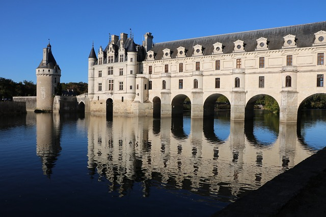
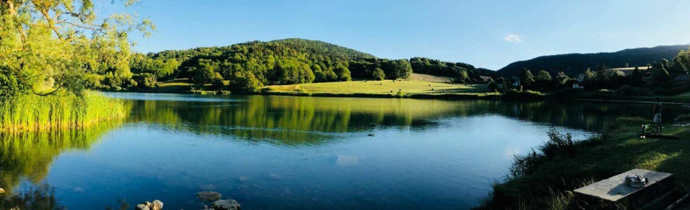
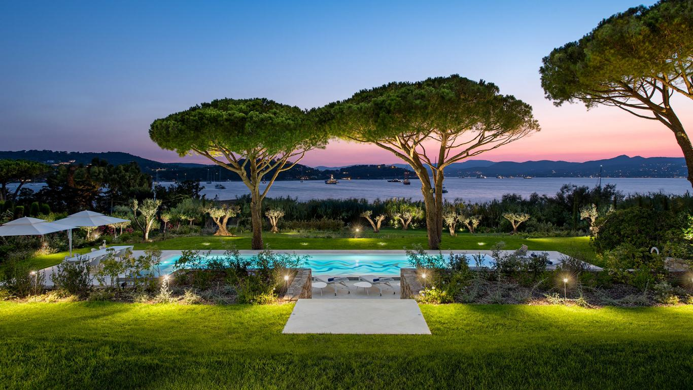

About France
Table of Content
The Beauty of France
You might never have discovered the best of France. Behind a touristic and commercial aspect, France has lots of hidden beauty. Not only in nature but also in people.
Apart from the large and beautiful variety of the natural environment, France has produced a noticeable quality of life. Some call it the Art of Living.
Marked by a certain absence of anxiety, even in the midst of hectic chaos, French character is forged by a natural encounter of opposing forces.
Primitive brute forces, adapted in coexistence, in spite of appearances, have found a balance in their constant opposition together. Opposition is a game in France. People have learned to live together with differences and are mostly happy and peaceful. Life is rather self-sufficient. Poor or rich, active or passive, left or right politics, people are pretty well-balanced, even if the appearance doesn't show it so much. Life is a play.
At least for the native French people. Those who have genetically inherited the character this land has produced. I am not talking about the large and growing immigrated, "non-French' part of society. Many have desired to conquer France over history, collectively and individually. Still today, people from all over the world flow into the country, trying to make it their homeland, longing for a better life.
But to integrate this 'out-of-the-box' nation, deeper cultural understanding and perseverance are needed. Social and hospitable as they are, the French usually want to help people, but most immigrants though, will have difficulty to truly come to understand the life and the culture in this country.
The Difference
Common life in France paints another picture than the overall competitive Anglo-American, North European or Asian societies, where generally a severe survival battle claims its price.
Things like performance pressure, goals to attain, obligations and responsbilities to assure, make most people's lives a never-ending, stressful race to beat the competition. This way of living claims high tolls, usually called stress and anxiety.
The bottom line is this: "We don't have it, and we stress to get it.” Whatever "it" means to be in peace.
The excellence of France I suggest doesn't need that kind of pressure. Aiming to become the number one doesn't work so much here. Winning is not that important. Less than what we can see in other cultures. This truly has a sense of wisdom and maturity. Beating the competition doesn't last very long in life. But to find authenticity and acceptance will do a much better job in reaching some long lasting satisfaction.
Daily life
In France one can usually find the balance needed to be fulfilled. Generally, life is prosperous for people willing to work. Mainstream society has disciplined habits, a healthy daily rhythm and a good measure of satisfaction and happiness. There is reasonable social and financial freedom, with help and opportunities for all who make effort. People are mostly qualified and faithful in their work and fast runners will get frustrated quickly.
Top performance doesn't come from being fast and beating the competition. It is cultivated by diligently, patiently laboring on skill and quality work. With peace of mind. France is expressive and artistic. Peace, which is the absence of anxiety, is a crucial ingredient for the success of any artist. Success is guaranteed if one knows how to let time perfect his work.
.jpg)
Globally, French people are quite characteristic and out of the box. Expressive. They may seem to come from another planet sometimes. You may wonder what point of view they are coming from. For a good part of people, logic is not their strong. Intuïtion is. This can be very frustrating for foreigners. It is never easy to understand how they tick. But enriching and fascinating to discover, if we're open for surprises.
When I started to let go of my “Dutch/Germanic” educational concepts, after quite some years, I became more “French”. I discovered a new and fascinating way of viewing & living life. With peace, inspiration and an inner kind of riches. It made me happier and better balanced. A valuable lesson French society taught me. Something never seen in Holland. But I have no clue if they know what I am talking about. For them it is just normal.
Art of Living
To work hard, in absence of performance pressure is indeed an art. No strive, no stress. At best, this is what France has to offer. If we succeed to get out of the common rat-race.
To master this art, one needs a minimum of confidence and self-discipline. French life is based on hard work, but peacefully, keeping things simple. Only then we can appreciate small things: a "baguette', cheese, wine, a picknick, a belvedere. An encounter in the street, a talk with a stranger, a few philosophical reflections and poetry. And a regular good bath of sunshine with a good laugh on the village square, together with his friends.
That will be enough to be satisfied, for the present moment. Demanding more would fail the point of life and disturb the balance & harmony in this beautiful country. Small things matter and make a difference. Small things do not really exist in our big Universe. Or at least, they are relative. Compared to the Universe, everything is small. We are small! Let's stay humble.
Art and quality come from valuing and cultivating small things. Starting small and be faithful. This seems to be a French native understanding. Even if things appear differently. In the daily authentic French character we find a humble attitude of self-discipline. Resisting such practice, will cause suffering in France. This is why many strangers fail to integrate. Trying to be great is not accepted. Unless you really are. In daily life, starting small is accepted. I guess this is also universal.
Great if you get the point. The king in France does…
The Life of a King
There is an expression to 'Live like a King or a God in France'. It has a long dated meaning. It is not about wealth or power, which mainly generate anxiety. The root is in culture: although France is rich with beautiful natural environments and resources, the human riches are in the cultural heritage and in the art of living. Don't get me wrong: a lot of people in France do not live like kings … rather as hard workers.
What is Culture?
Let's say that culture is the expression of the thoughts and labors of man. So France is rich in culture. Lots of creative thinking. Lots of expressions. Many generations have reflected and labored to express who they are and want to be. Artistic creativity and a peaceful mindset have been ingredients to this.
And culture culminates. Thoughts and labor of man influence thoughts and labor of man.
So culture produces a heritage. The passing on of thoughts and labor.
In France for many centuries.
The art of living is not in "what" we do but in "how"
we do it. Every country makes wine. But not like the French. Every country makes cheese.
But not like the French. Love it or hate it, at least they have their way
and experts praise them for it.
It takes time to learn a skill. For a nation, it is called "Culture". It takes
passing on of knowledge and experience, it takes examples, generation upon generation,
and it takes observation.
The Quality
Of course, the quality of life depends on the means you have. Generally, life in France provides what you need. People have a global feeling of happiness, peace of mind and satisfaction. Now that is quite a statement, and maybe not everyone agrees. In the restless Monday morning traffic of Paris, it will be hard to imagine this. But there also, in the midst of horning cars and yelling drivers, a certain peace of mind covers the population. Unless chaos is all one can notice.
Although France is quite rich, this global satisfaction is not related to financial wealth. Rich people are all over the world but do not necessarily have quality of life. Many rather poor, hard-working French people do have quality of life. Many live peacefully, happily and fulfilled. Their ability to appreciate simple, natural things is related to this quality of life, and is passed on in their culture.
Appearantly, dispute and complaint seem omnipresent outwardly.In reality, it is more like a game. A way of doing things, a habit. In most cases the chaos does not reflect the inner state of people. Of course, this does not concern everybody. It is impossible to tell what percentage of the people in France truly own a cultural heritage, and how many are merely trying to copy a way of life that is not their own. The original blueprint might become rarer and rarer. Less and fewer people may even be aware of its existence. Pride, arrogance and selfishness make all people blind, also among the French.